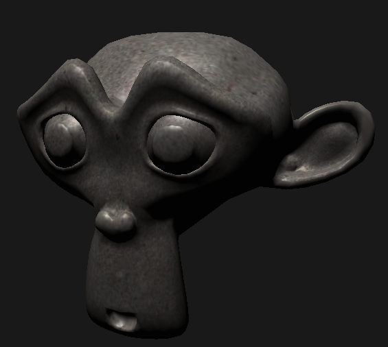

Stuff i've done
What's here then?
This page is reserved for me to show off what i have done and will do in the future, this includes small projects i have done, shaders i've made or games i've been part of that have been published.
Things i have done
Interplanetary:Enhanced edition
INSERT VIDEO HERE
This is a project i worked on as an intern in Team Jolly roger, i was at work practise for them during spring and asked to take part of interplanetary during summer. Most of my work in the game was small stuff like adding audio to appropriate places but i also got to create few of the weapon functionalities like the nuclear weapon, asteroid diversion and solar laser. In addition to that i also got to program additional flight effects to the projectiles like splitting and homing to the planet.
Neverust level editor
This was a student project i worked on most of 2016, it was a first unreal project i worked on and first project i used c++ on so it was quite a learning challenge. During this time i didnt know much about meshes and transforming them so i didnt get to make a landscape editor unfortunately so most of the editor is just asset placement and putting dont game functions
OpenGL
OpenGL interested me after i got introduced to it on a course and made me want to learn it better, i made this small engine with tutorials on my spare time and have learned loads of new things abou the graphics side of game development. i hope at one point be able to program great effects with shaders and mesh transforming
